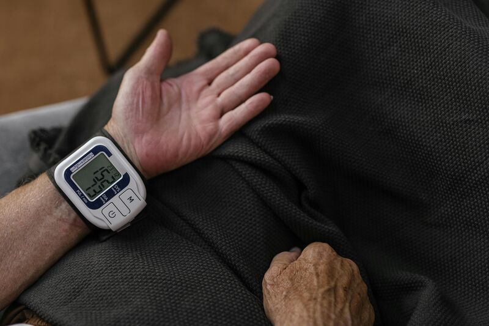
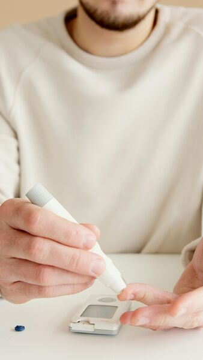
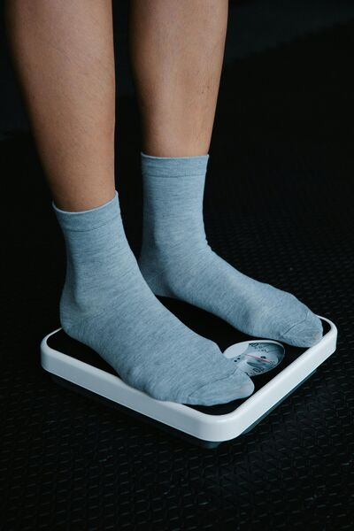
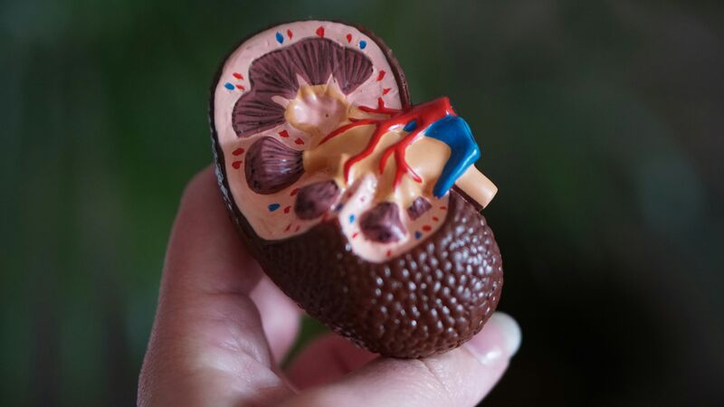
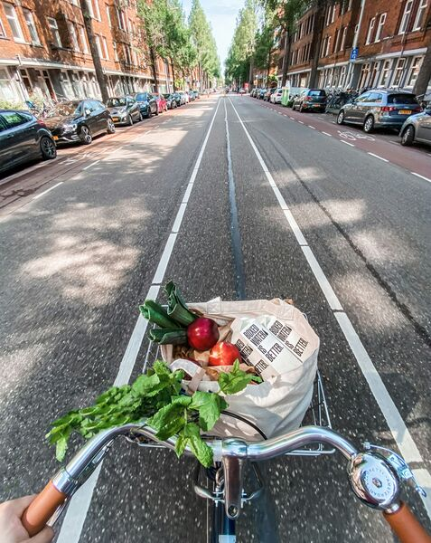
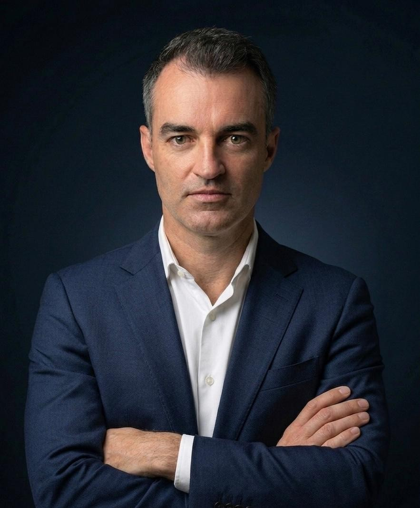

Protocolo médico personalizado + assessor virtual que te acompanha entre consultas.
Hipertensão, diabetes, obesidade, DRC e qualidade de vida.
O cenário
E 80% abandona o tratamento sem acompanhamento contínuo.
O método
Cada condição tem um alvo mensurável. O protocolo te leva até lá — e mantém você lá.
O que te leva até lá
Cada condição tem um alvo mensurável. Metas definidas na consulta, com prazo para atingir.
Monitora, lembra, cobra e registra. Você nunca está sozinho no protocolo.
Desvio real vira ação. Ajuste de dose, teleconsulta, intervenção quando precisa.
Como funciona
Avaliação completa: história clínica, medições, hábitos de vida e objetivos. Exames laboratoriais + bioimpedância no consultório. Primeiras orientações já saem daqui.
Apresentação do protocolo completo após resultados dos exames — presencial ou telemedicina. Dieta, medicações, suplementos, hábitos e cronograma de acompanhamento.
Entre consultas, o assessor virtual monitora aderência à dieta, medicações, suplementos, dados de wearables e hábitos. Alerta o médico se algo sair do caminho.
Reavaliação: bioimpedância, exames de controle, revisão dos dados do assessor virtual. Ajustes no protocolo e — quando a meta é atingida — migração para manutenção.
Seu acompanhamento diário
Todos os dias, o assessor virtual do Apex Health acompanha sua dieta, hidratação, medicações, suplementos, sono e atividade. Se algo sair do protocolo, o médico é alertado antes do próximo retorno.
Para quem

Controle pressório com monitoramento contínuo e ajustes em tempo real.

Protocolo integrado de dieta, medicação e hábitos com acompanhamento diário.

Composição corporal com bioimpedância seriada e acompanhamento nutricional.

Nefroproteção com controle pressório e metabólico integrado.

Para quem quer otimizar saúde, composição corporal e bem-estar com base em evidências.
Síndrome CKM
A Síndrome Cardiovascular-Renal-Metabólica (CKM) é a interação entre obesidade, diabetes, doença renal e doenças cardiovasculares. Isoladas, cada condição já oferece risco. Juntas, elas se potencializam — e a maioria dos pacientes convive com duas ou mais ao mesmo tempo sem saber. O protocolo Apex Health trata todas de forma integrada desde o início.
Ndumele CE et al. Circulation. 2023;148(20):1606-1635. AHA Presidential Advisory — Cardiovascular-Kidney-Metabolic Syndrome.
O médico

Médico com formação em Clínica Médica e Nefrologia, Diretor Médico da Fenix Nefrologia em São Paulo. MBA em Gestão de Saúde pela FGV. Desenvolve protocolos integrados para hipertensão, diabetes, obesidade e doença renal crônica com acompanhamento contínuo por assessor virtual.
Testa os próprios protocolos — nos ciclos de preparação de maratona, vive a rotina que prescreve
Assessor virtual desenvolvido por ele — tecnologia a serviço da aderência
Conduta baseada em evidência — guidelines AHA, KDIGO e SBMFC
Resultados
DAPA-CKD · NEJM 2020
EMPA-KIDNEY · NEJM 2023
UKPDS 35 · BMJ
Apex Health Insights
Conteúdo sobre saúde, bem-estar e qualidade de vida baseado em evidências.


Perguntas frequentes
CRM-SP 151.041 | Guidelines AHA & KDIGO | Assessor virtual proprietário
Conteúdo
Hubs temáticos, artigos e dados clínicos para profissionais e pacientes.
Rim, coração e metabolismo: o que é a síndrome cardiovascular-renal-metabólica e seus 5 estágios.
Ler artigo →A pressão alta silenciosa que destrói os rins: como identificar e proteger a função renal.
Ler artigo →Nefropatia diabética: 1 em cada 3 diabéticos desenvolve doença renal. Sinais precoces e proteção.
Ler artigo →Além do peso na balança: como a gordura visceral agride os glomérulos e o que fazer.
Ler artigo →O risco invisível do ibuprofeno e diclofenaco para quem já tem fator de risco renal.
Ler artigo →Por que o exercício físico é remédio para o rim — e como prescrever com segurança na DRC.
Ler artigo →Monitoramento contínuo com Oura Ring e Apple Watch: métricas que importam na prática clínica.
Ler artigo →25+ indicadores em 6 domínios — desfechos, nutrição, adequação, qualidade de vida, cardiovascular e composição corporal.